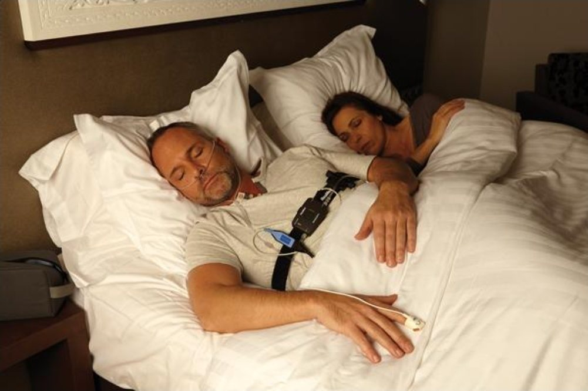

En tu casa
Poligrafía respiratoria domiciliaria
Un estudio simplificado que realizas en tu propia cama, sin salir de casa. Preciso para detectar apnea del sueño cuando el caso es claro y no hay otras complejidades.
- Qué mide: flujo respiratorio, oxígeno, ronquido, esfuerzo y posición corporal
- Equipo: ApneaLink Air (ResMed) — portátil y de grado clínico
- Dónde: en tu domicilio u hotel, en tu horario habitual de sueño
- Resultados: interpretación en hasta 5 días